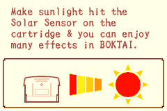
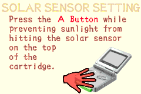

Boktai - The Sun Is in Your Hand (USA) (Sample)
EEPROM 4K gbakit Built-In ⏰ Real-Time Clock (RTC) ☀️ Solar Sensor 📺 Joybus 💾 MultiBoot 🎮 4P Link
Cartridge Identity
- Game Code
A3IJ(FamilyA3I)- Header Title
BOKUTAI- Maker / Revision
GB/ rev224- ROM Size
- 16.0 MiB (16,777,216 B)
- Save Media
EEPROM 4K- SHA-256
ecfc68885942fab16a03a13ffe3da74a3d596a9692be2ef9a9ce9f95756ff8e9- Engine / SDK Group
comm-010(33 families)
Screenshots


Cartridge Hardware & Physical Peripherals
This cartridge PCB features physical hardware peripherals: ⏰ Real-Time Clock (RTC) ☀️ Solar Sensor.
Detailed register specifications, GPIO pinouts, and hardware architecture are available in the Cartridge Hardware Reference.
- RTC SDK Signature
SIIRTC_V001at offset0x42ee08- Cartridge GPIO Port
0x080000C4(GPIO_PORT_DIRECTION) · 4 load instruction references in code- Cartridge GPIO Port
0x080000C6(GPIO_PORT_DATA) · 4 load instruction references in code- Cartridge GPIO Port
0x080000C8(GPIO_PORT_CONTROL) · 4 load instruction references in code- Solar Sensor Interface
photodiode_adc_solar_sensoroncartridge_gpio_bit3via0x080000C4,0x080000C6,0x080000C8· Context string:Solar Gunat0x76e7ef
Link Cable & Multiplayer Communications
This title contains detected communication capabilities: 📺 Joybus 💾 MultiBoot 🎮 4P Link.
Detailed protocol specifications, SIO registers, Joybus commands, and MultiBoot sequences are documented in the Link & Multiplayer Reference.
- Multi-Player SIO (4P)
- 16-bit ring network · SIOCNT (
0x04000128) literals:0x19eba8,0x19ec54,0x19eca4· SIODATA32/SIOMULTI0 (0x04000120) literals:0x19edc0,0x19f6f8 - GameCube Joybus
- RCNT mode literal
0x0000c304(mode0xC000) at offset0x1a23b0(RCNT literal at0x1a23ac) - Single-Cart MultiBoot
- Single-Cartridge MultiBoot (Download Play) client/server handler · Thumb SWI 0x25 (
0xDF25):0x1c1ca8,0x1fe834,0x2780f4,0x28caec
Battery Save Support in gbakit
Built-in definition (A3IJ)
gbakit save verify A3IJ save.sav
gbakit save decode A3IJ save.sav
gbakit save fix A3IJ damaged.sav -o repaired.savROM Assets, Compression & Audio
- BIOS Compression
- LZ77 (
0x10): 121 streams · RLE (0x30): 0 streams - ROM Pointer Tables
- 126 tables (0 pointing to validated compressed streams)
- SDK Backup Tags
EEPROM_V122
Asset Map (formatkit.asset-map.v1)
Download A3IJ-r224-ecfc68885942fab1.asset-map.json.gz (43,702 B (42.7 KiB)) Verified PASS · 49.89% coverage
| Metric | Bytes / Value | Entries |
|---|---|---|
| Identified | 45,434 B (44.4 KiB) (0.27%) | 338 |
| Mapped | 0 B (0.00%) | 0 |
| Opaque | 8,325,272 B (7.94 MiB) (49.62%) | 1 |
| Unknown | 8,406,510 B (8.02 MiB) (50.11%) | 327 |
| Total ROM Size | 16,777,216 B (16.00 MiB) | 666 |
| Coverage % | 49.89% | — |
| Entries w/ Code Refs | 355 / 666 (53.30%) | — |
Top Identified Formats: gfx.gba-palette (332 · 26,464 B (25.8 KiB)) · compress.bios-lz77 (3 · 11,190 B (10.9 KiB)) · audio.m4a-song-table (1 · 6,776 B (6.6 KiB)) · compress.bios-huffman (1 · 812 B) · gba.rom-header (1 · 192 B)
Largest unknown Extents (Headerless / Custom Asset Candidates)
| Offset | Size | Shannon Entropy | Code Refs |
|---|---|---|---|
0x00285EA4 | 869,004 B (848.6 KiB) | 7.041 bits/B | 0 |
0x00740280 | 848,012 B (828.1 KiB) | 6.518 bits/B | 0 |
0x0035A150 | 753,116 B (735.5 KiB) | 7.075 bits/B | 0 |
0x00563F20 | 312,668 B (305.3 KiB) | 6.473 bits/B | 0 |
0x0023080C | 310,756 B (303.5 KiB) | 7.329 bits/B | 0 |
gzip -dk A3IJ-r224-ecfc68885942fab1.asset-map.json.gz && gbakit map verify rom.gba A3IJ-r224-ecfc68885942fab1.asset-map.json
gbakit assets export rom.gba --asset-map A3IJ-r224-ecfc68885942fab1.asset-map.json -o out/Text, Fonts & Scene Data
- Primary Text Encoding
- Plain ASCII (uncompressed) (
877ASCII strings) - Font & VWF Indicators
- VWF Width Table 1bpp Font · BIOS SWIs: BitUnPack
0x10:4· LZ770x11/12:12· Huffman0x13:6· RLE0x14/15:8 - Scene & Packaging
30ROM pointer tables (≥32 entries,0≥200) ·16relativeu32TOCs ·203OAM metasprite hits
Hardware MMIO Subsystems
ppu_display0x811a6dc,0x8128f1c